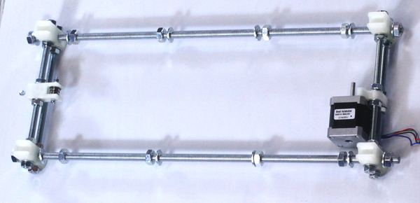
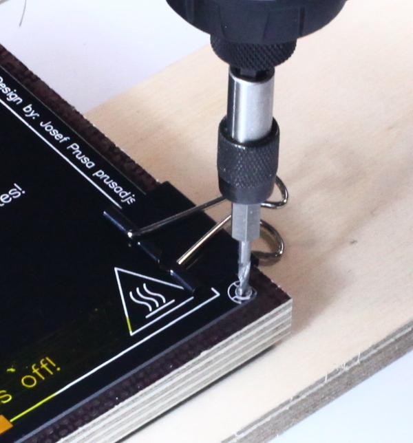
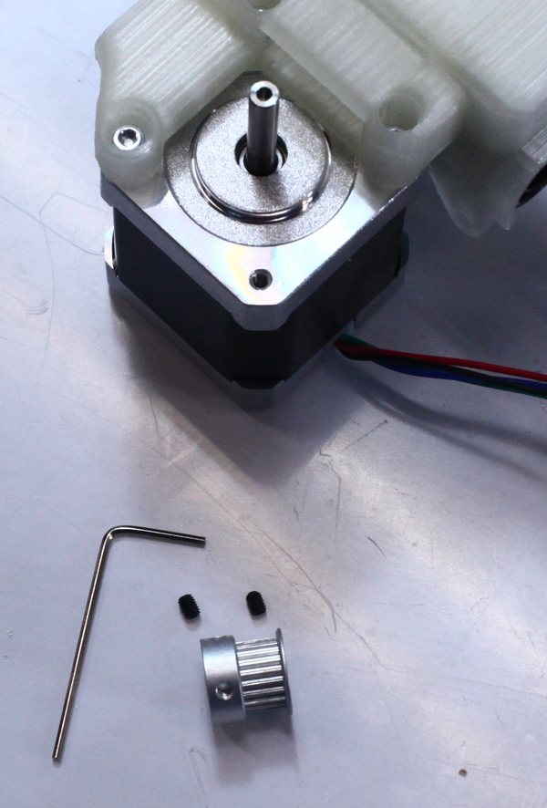
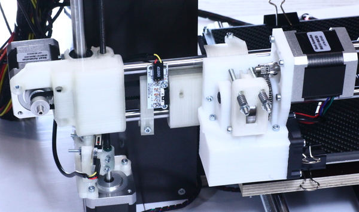
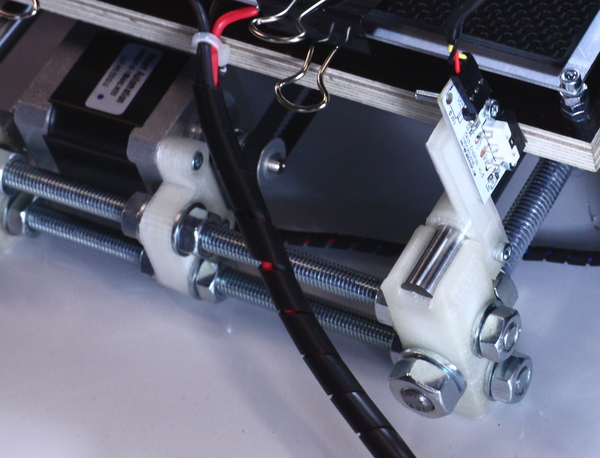

{kind=link}
{kind=link}
{kind=link}
{kind=link}
{kind=link}
{kind=link}
{kind=link}
{kind=link}

1. Slide M8 nuts and washers to the M8x200 rods as shown
Thank you for your interest on the 5 Years Reprapsource Edition Box Frame i3 Model.
This kit is the most easy kit to build that we've made in 5 years. We still let you the fun of a bit of working with wood and let you assemble the hardware bits. But we've taken out the hassle of building the bits that normally requires soldering and ship them preassembled.
Y axis idler printed part
Y axis motor holder
2x F624 bearing
1x M4x30
1x M4x20
1x washer M4
2x M4
2x M3x10
1. Take a stepper motor, the Y axis motor holder printed part and two M3x10 bolts. Mount it to the motor as shown.
Set aside for later.
2. Push the nut into the nut trap of the y idler printed part.
3. Insert a M4x20 bolt through the part as shown.
4. Take a M4x30 bolt, two F624ZZ bearing, one washer and two M4 nuts. Assemble as shown. Put an M4 washer in the middle of the bearings and make sure to secure the two nuts against each other. Make sure the bearings spin freely after tightening.
Previously assembled Y-motor and Y-idler
4x printed Y corners
4x M8x200 rods
22x M8 nuts
22x M8 washers
1. Slide M8 nuts and washers to the M8x200 rods as shown
2. Add the previously assembled Y idler and Y motor assembly. The Y motor assembly slides into two rods.
3. Add washers and nuts as shown in the picture. Only hand-tighten them right now.
4. Add the Y corners to the rods. Make sure the open side to the top of those parts point in the same direction and:
for the assembly with the motor: Open side points towards the side of the motor shaft
for the assembly with idler: Open side points towards the side of the ball bearings
5. Add washers and nuts as shown. Only hand-tighten them right now.
6. Slide the two assemblies through 2 M10 rods and tighten the M8 nuts on the corner parts.
7. Remove the M10 rods again.

8. Take the two M10 rods and 8 M10 nuts and washers.

9. Slide on the nuts and washers as shown. Only approximate the position as shown on the picture.

10. Slide the M10 rods through the bottom holes of motor holder segment and attach them with a washer and a nut.
11. Pick the two 470mm smooth rods and 3 LM10UU bearings. On one smooth rod, slide one LM10UU on it, on the other slide two LM10UU on it.
12. Put the the smooth rods onto the Y corners. Adjust the position of the Y corners according to the smooth rods, then carefully push the rods down on every side. They will require some force to snap into it.
13. After the rods are inserted, tighten the M10 nuts on the Y corners.
Y axis from last step
1x Pulley
2x M3x4 grub screws
1. Slide the pulley onto the motor shaft as shown and tighten it with two M3x4 grub screws. Leave a bit of space between the motor body and the pulley.
Hex Wrench (1,5; 2,5)
3 x Bed holder
1 x NEMA17 motor
2 x M3x10 bolt
1 x Pulley
2 x grub screw
3 x M3x30 bolt and nut


1. Place the three holders above the linear bearings and snap them into place as shown.
2. Take the M3 nuts and bolt to attach the lower clamp like part of the print bed holder tighter to the bearing –do not tighten to much – tighten them later if necessary.
3 or (better) 3,2 mm drill bit and drill
piece of scrapwood
pencil
masking tape
ruler
Heatbed
225x225 mm wooden plate
4 bulldog clamps

1. Use the 4 clamps to attach the heated bed PCB to the square wooden plate (smooth side (top) up).
2. Use the scrapwood as base and drill through all 4 corner holes of the heatbed and the wooden plate.

3. Remove the clamps and mark the direction in which the heatbed cables pointed when you drilled the holes.

4. Turn the wooden plate upside down. You know see the rough side (bottom). Use a ruler to mark the middle of the plate and draw a line. (Your marking for the cables should be on the left side of the ruler)
5. Without lifting the ruler, make a mark at 112mm from the edge, and another mark at 20mm from the edge.
6. Position your ruler on the 20mm mark, and draw a line parallel to the edge of the square plate.
TIP: It is possible to get the wooden parts, with different coatings or even without. We usually deliver dark coated wood, because it looks the nicest. But feel free to use what you like. To make it easy to mark the wood with a pencil, put some masking tape on it.
Screwdriver
3 or (better) 3,2 mm drill bit and drill
6 x 3,5x20 mm wood screws

1. Flip your y axis upside down and balance it on the plate.
2. Position the two printed bearing holders on top so that their top touches the line you marked.
3. Position the third bearing holder so the vertical line is visible through its mounting holes.


4. Pre-drill each hole exactly on the line and attach the printed part to the wood with two wood screws.
5. Position the top right printed part so that its top is aligned with the line and it is horizontally about halfway between the line you drew and the edge of the plate.
6. Pre-drill the top hole and insert a screw.
7. Position and mount the top left part the same way. Make sure they are both aligned with the horizontal line.
8. Now add the bottom two screws.
9. Flip the axis, test it. The printbed should move freely.
WARNING: Be careful - do not drill through the wooden plate. Primary drilling secures, that the wood screws set in exact positions.
Sidecutter
Screwdriver (PH2)

gt2 belt
Y-belt clamp
2 x 3,5x20 mm wood screws
1 x M4 x 20 screw

1. Flip over the Y-Axis.
2. Pass the belt over the motor and belt tensioner.
3. Put together both ends of the belt.
4. Cut the belt.

5. Get the Y-belt clamp and align its corner to the center line and the 112mm marking.

6. Pre-drill through the Y-belt clamp holes.

7. Use wood screws to attach Y-belt clamp.

8. Insert the belt on both sides so that it's tight.
Sidecutter
Screwdriver (or Power tool)

X-Axis idler
X-Axis carriage
X-Axis motor holder
2 x M5 nuts
1 x M5 bolt
6x LM10UU bearings

1. Remove the two support ridges from the X-Axis idler with a sidecutter.
2. Use the M5 bolt to securely insert the M5 nut into the nut trap. Then remove the bolt.

3. Repeat for the other X end.


3. Slide in the LM10UU bearings into the printed parts with reasonable force. Insert a smooth rods into the bearings before doing so if necessary.

X-Axis idler
X-Axis carriage
X-Axis motor holder
2 x 470 mm smooth rods

1. Slide the printed parts on to the smooth rods. (Watch the picture carefully.) The ends of the smooth rods sit approximatley half the way into the printed parts.
Hex wrench (1,5; 2,5) Screwdriver (PH2)

1 x NEMA17 motor
3 x M3x10 bolt
1 x Pulley
2 x grub screw
1. Place the motor so that the wire harness is facing in the opposite direction of the small arm of the X-Axis motor holder.
2. Attach the 3 M3x10 screws.
3. Slide on the pulley as shown. Leave a small gap between pulley and motor body.
4. Use the grub screws to attach the pulley to the motor shaft.
Hex wrench (2,5) 2x 13 mm wrench
X-Axis belt tensioner
2 x F624 bearings
4 x M4 nuts
2 x M4x30 screws
1 x M4x20 screw
1x M4 washer

1. Slide a M4 nut into the nuttrap of the belt tensioner and insert the M4x20 bolt.
2. Slide in M4x30 screw and put on the two bearings with a washer in the middle as shown.
3. Put on two M4 nuts and tighten them against each other. Make sure that the bearings move.

4. Insert the belt tensioner into the X idler.

5. Connect both parts with the M4x30 screw and nut.
Screwdriver
3 or (better) 3,2 mm drill bit and drill
Countersink bit
(Optional) second drill or power screwdriver (Makes working much easier, because you do not have to change the bits all the time)
pencil or other marker
overview and the helping hands of a friend, if available are suggested
3 mm spacer (f.e. I used a cutting mat. Or you can use a couple of M4 nuts, there are enough in the kit.)

6 x 450 mm wood panels (IMPORTANT: Put the longer panel away to not mix up the panels. You will need it later.)
20 x 3,5x20mm wood screws

Position of all frame screws.

1. Take two of the 450mm panels and put them edge to edge on a flat surface, forming a corner.

2. Have a friend or a clamp hold them in place and drill through one into the center of the other, about 2,5cm (1 in) from the end. (Check this position before drilling to avoid a conflict Z-axis top brackets!)
3. Make super-sure the panels line up when you drill.

4. Countersink the hole on the flat side and add a screw. Make sure the edges line up.
5. Repeat on the other end, again about 2.5cm (1 in) from the edge and in the middle.
6. Take a second pair of panels and repeat step 1-5.

7. Well done - you finished both sides of the frame

8. Orient the two sides so that the screws point TO THE SIDE in both panels.
9. Place the corners approximately 450mm apart (inside to inside) and place a 3mm spacer in each one.

10. Place a 450mm panel between them. (This will be the bottom of the frame.)

11. Drill into the middle of the panel from the front, countersink and add a screw. Make sure the spacers don't move around when you drill. You want the bottom panel to be flat and 3mm off the table.
12. Add another screw. so that each corner is attached with two screws in the front.

13. Press the frame sides flush against the panel, put two more screws in on each side, this time on the side of the panel.


14. Put your frame piece flat on the table and align the last 450mm panel with open edge of the frame. (Opposite the panel you recently attached.)
15. Keeping it aligned, drill, countersink, and add a screw on the inside corner of the panel. Be careful not to drill through both panels into your table. Repeat this on the other side of the frame.
16. Add two more screws as shown.
TIP: You can add tape to keep the panels in position. Additionally you can use some masking tape to on your drill, if you have not a distance piece on your drill, to keep the drill deepth. Plan your drilling ahead to avoid the trouble of overlapping screws! You need to keep the position of the Z-axis top brackets in mind!
Screwdriver (PH2)
3 or (better) 3,2 mm drill bit and drill Countersink bit (Optional) second drill or power screwdriver (Makes working much easier, because you do not have to change the bits all the time)
1 x 474mm wood panel
8 x 3,5x20 mm wood screws

1. Place it on top and align it with the edges.
2. Attach it to the corners with 4 screws on each side. (I am sure you are now very proficient in doing this!)
3. Good work - the frame is finished.
Screwdriver (PH2)
3 or (better) 3,2 mm drill bit and drill
3mm spacers
Zipties
2 x Z-Axis top bracket
2x Z-Axis motor holder
2 x NEMA17 motor
6 x M3x10 bolt
X-Axis part
8 x 3,5x20 mm wood screws

1. Take your trusty 3mm spacers and a motor.

2. Put the motor on the spacers, put the printed piece on the motor and align it all with the frame.
3. Drill into the side through the hole and attach a screw.
4. Remove the motor and spacer, hold the piece against the frame aligned and drill the second hole.
5. Add a screw. Do not overtighten these two screws or you will harm the part. (4 Nm would be fine - so go on and get some proper tools ;-)) The front screw will go through the panel. (If the screw top bothers you, you can use a glue gun and put some glue on it.)


6. Use 3 M3x10 bolts to attach the motor to the printed piece, wires pointing to the inside.

7. Stick a smooth rod into the printed part while holding the motor. The smooth rod should touch the motor body.
8. Carefully slide the Z-Axis top bracket onto the smooth rod and align it with the the top panel. (You now see, why it is so important to keep the screw positions in mind when you assemble the frame!)

9. Drill and attach with screws as before. Do not overtighten.

10. Repeat this procedure (Step 1-9) on the other side.

11. After attching all the printed parts, slide in the smooth rods. Do not forget to put your X-Axis part on to the smooth rods. Adjust the distance of X-Axis motor holder and X-Axis idler if necessary. Make sure your X axis slides up smoothly and comes down by its own weight easily.

12. Attach X-Axis with 2 zipties on each side to the top of the frame.
Screwdriver (PH2)
Tape measure
3 or (better) 3,2 mm drill bit and drill
Frame
Y-Axis
4 x Frame mounts
16 x 3,5x20 mm wood screws

2. Adjust the nuts on the bottom threaded rods so they are close to the base plate of the frame. The threaded rods themselves should be just about touching the plate.
3. Measure 80 mm between the two M10 nuts edges on the motor side.

4. Place two frame mounts on the threaded rods so that the little lip they have hooks tight on the edge of the panel. Do not move the nuts along the rod.
5. Drill and screw down ONE hole on each of them.
6. After that put in the other six screws.

7. Place the other two frame mounts on the opposite edge of the panel.
8. Place nuts and washers against them. Everything should sit tight and straight.
9. Screw both of them down and tighten the nuts.
10. Make sure the nuts on the other side have not moved. Adjust if necessary.

11. Great - Y-Axis attached! (Come on clean the saw dust, if you have not use somekind vaccum device.)
Sidecutter

gt2 belt

2. Clamp in one end of the belt like shown in the photo.

3. Pass the belt over the motor pulley and all the way back through the X-Axis carriage and to the other side of the frame.

4. Lead the belt over the X-Axis idler bearings and back to the X-Axis Carriage.

5. Now cut of the excess belt. One belt end should touch the other approximately.

6. Push in the belt.
Hex wrench (2,5)
X-Axis motor holder
X-Axis carriage
X-Axis idler
7 x M3x30 mm screws
7x M3 nuts

2. Slip a screw through each bracket and put a nut on it. Only hand tighten the nuts. Tightening them to much would screw the movement of the X-Axis.
3. So put on two screws on X-Axis motor holder and X-Axis idler and three screws on the X-Axis carriage.
Hex wrench (2,5)


2 x M5 threaded rods
tubing
4 x tube clamps
4 x M3x10 mm screws
4 x M3 nuts
Patience this is a bit fiddly

2. Slide at least half an inch of the tubing on each M5 rod.

3. Put a tube clamp wit screw and nut behind the tubing.
4. Put another clamp over the Z-Axis motor shaft.
5. Screw the M5 rod through the M5 nut on the X-Axis.

6. Than slip the tubing over the Z-Axis motor shaft (the fiddly part).

7. Slip the tube clamps over the motor shaft and rod part covered with tubing and attach them properly.
8. Repeat this process for the other side.
IMPORTANT: Handle the threaded M5 rods with care. They are essential for a good working Z-Axis.
Hex Wrench (2,5) Wrench 5,5 mm
Heatbed
Laminated carbon plate
4x bulldog clips
4 x M3 x 30 mm screws
4 x M3 nuts
12 x M4 nuts
1. Put the top of the heatbed (blank aluminium) onto the y-axis
2. Put a M4x30 bolt through the top of the heatbed and put 3 M4 nuts through it. The bolt will slide through the nuts. On the bottom of the plate, put a M3 bolt.
3. Repeat for all sides
4. Tighten all the M3 nuts on bottom of the plate.
5. Add the laminated carbon plate on top of the aluminium plate and clamp it on with bulldog clips.
Hex Wrench (2,5)
Idler
608ZZ bearing
M3 nut

1. Push a M3 nut into the hexagonal slot on the Idler.


2. Slide the 608 bearing on the M8x20 grub screw

3. Push the grub into the idler.
Hex Wrench
2 x M4x60 mm
2 x M3x30 mm
1 x M3x25 mm
2 x M4 nut
3 x M3 nut
2 x spring
Extruder
Idler
large cable bundle tube


1. Use the large cable bundle tube to combine thermistor, hotend and motor cable.


2. To attach the extruder to the X-axis slip the two M4 x 60 to the upper holes of the extruder mount in direction of the motor.


3. Put the two M3 x 30 into the lower holes from the opposite side and attach the extruder mount to the X-carriage.

4. Attach the idler with the M3 x 25 to the extruder mount.
5. Slip the M4 x 60 through the idler and put on a spring and a nut.
Screwdriver (PH2)
6 x Zip ties
3 x 3,5x20 mm Wood screws

1. Hold the electronic to ist final position and mark the position of the free circuitboard holes approximately. You do not need the exact position of the hole. (Watch the pictures first!)

2. Slip a zip tie through each of three free holes and make a loop.

3. Put another zip tie through each loop and form a loop. Tighten the inner loop and trim it.

4. Screw in the three wood screws a little on the marked positions. Be careful to not screw to deep. The screws should sit tight but not come out on the front panel.

5. Attach the electronics to the wood screws with the outer zip tie loops. Tighten and trim the zip ties.
IMPORTANT: Do not screw in in the wood screws to deep or you will ruin the printer front!
Fingers
Hands
8 x zip ties

1. Connect four zip ties. Leave the end open. Do this two times.

2. Attach the power supply to the bottom corner on the electronic side.
3. Trim the zip tie.
4. If you find a more elegant and easy way to attach the power supply, then let us know.
Hex wrench (2,5)

3 x micro switch
X,Y,Z endstop holder
6 x M3x10 mm screws
3 x M3x20 mm screws
9x M3 nuts
3 x endstop cable


1. Screw one micro switch on to the flat side of each endstop holder with the M3x10 mm screws. The latch of the micro switch facing away from the part

2. Put a nut into each nut trap of the endstop holders.

3. Attach the x-endstop on the lower rod of the x-axis close to the x-motor and put a M3x20 bolt through, but don't tighten it yet.

4. Attach the y-endstop on the left rod close to the Y motor and put a M3x20 bolt through, but don't tighten it yet.
5. Attach the z-endstop below the x-motor on the z-rod with a M3x20 mm. The z-endstop is the printed part that is bigger. Don't fully tighten the bolt yet.

6. Attach the endstop cables to the micro switches and the electronics. The yellow wire should be put on signal and S on the RAMPS board.
7. Use big cable tube or zip ties to fixate the endstop cables in other cable looms if appropriate. For example join the x-endstop with the x-motor cable.
Brain, Patience
Eye-hand coordination
Installed Printrun (Installing printrun means simply unzipping the file into a folder.)
Hex wrench
Pronterface
Hex wrench
2 sheets of paper
Pronterface
Slic3r, Pronterface
On the first run, Slic3r will show a configuration wizard. Press cancel
Go to the Menu item "File" and select "Load config"
That's it. Your printer is now doing its first print.
{kind=link}
{kind=link}
{kind=link}
{kind=link}
{kind=link}
{kind=link}
{kind=link}
{kind=link}
{kind=link}
{kind=link}
{kind=link}
{kind=link}
{kind=link}
{kind=link}
{kind=link}
{kind=link}
{kind=link}
{kind=link}
{kind=link}
{kind=link}
{kind=link}
{kind=link}
{kind=link}
{kind=link}
{kind=link}
{kind=link}
{kind=link}
{kind=link}
{kind=link}
{kind=link}
{kind=link}